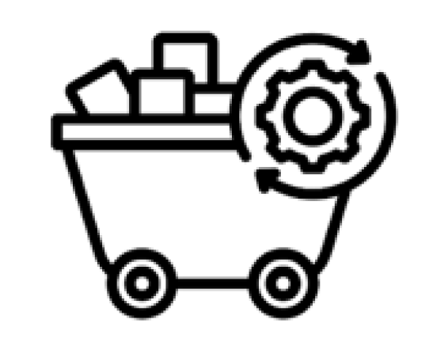
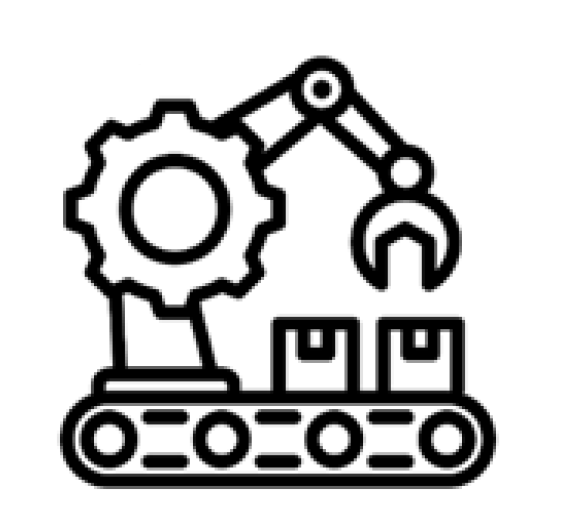
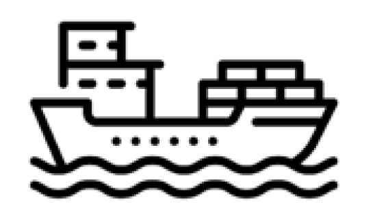

The Information and Communication Technology (ICT) Supply Chain
 If you prefer a more visual representation of the supply chain, you may find this cartography of the internet and this cartography of generative AI helpful.
If you prefer a more visual representation of the supply chain, you may find this cartography of the internet and this cartography of generative AI helpful.|  Raw Material Extraction and Processing |
Raw materials are necessary for the manufacturing of digital infrastructure and devices (e.g. computers, smartphones, cables, and monitors), and are rarely sourced from recycling efforts. The mining and processing of these materials, which include, for example, lithium, copper, gold, and rare earth elements, are associated with high carbon and water footprints, widespread water, soil and air pollution, biodiversity loss, and ecosystem fragmentation associated with land clearing. Much of the world’s mining activity is undocumented, meaning that the true extent of mining’s environmental impact remains unknown. Furthermore, because mining is often associated with poor working conditions, it also contributes to poor social and economic determinants of health. Often it is the poorest in society who live close to mines and experience these adverse impacts. | Pages 14 to 16 of this report provide more detail on this element of the supply chain. |
|  Production and Manufacturing |
The production and manufacturing of many digital devices and infrastructure components have been estimated to account for most of the energy and water consumed over all phases of the supply chain. For example, a two gram memory chip consumes 73% of its lifetime energy during the manufacturing process. In addition, production and manufacturing also generate large quantities of waste, which contributes to soil, water, and air pollution. | Pages 17 to 18 of this report provide more detail on this element of the supply chain. |
|  Transportation |
The globalised nature of the current digital technology and infrastructure supply chain inevitably means significant transportation is involved with the movement of materials, components, products, and waste. Transport has a range of environmental impacts and its globally associated emissions account for approximately 23% of all energy related carbon emissions. | |
Data Use (including software and web design) |
The environmental impacts associated with the use of digital technologies and infrastructure mainly come from the energy needed for data collection, storage, and processing. These energy needs are expected to grow for years to come, potentially outpacing the rate at which renewable energy can be rolled out. In addition to this, water consumption and land use change are increasingly impacting the environment as data centres proliferate, with reports noting that these are often in areas least able to sustain them. Upstream design can make a significant difference to the energy requirements arising from the use of digital technologies. Simple steps to reduce these energy requirements will be outlined as you work through this tool. It is worth noting that critics see green software tools as a distraction from real climate action, arguing that what is needed is a reduction in computing’s use of resource, not an ‘optimisation’. |
Pages 20 to 21 of this report provide more detail on the Data Use element of the supply chain.
This short learning module from the Green Software Foundation provides a wider context on how to develop, deploy, and manage environmentally sustainable software. (This module is also referenced at other points as you work through this tool). |
Recycling and End of Life Disposal |
It is estimated that over 50 million metric tonnes of electronic waste, or e-waste, was generated in 2019, and this figure is growing annually. This waste, which includes digital hardware and infrastructure, contains many hazardous materials, such as lead and mercury. Much of the disposal of e-waste is undocumented, often ending up in e-waste landfill in low- or middle-income countries, where it generates significant land, water, and air pollution for surrounding communities. Furthermore, when informal recyclers extract valuable minerals from the waste because of the need to earn a living, they do so using methods that pose further risk to both their own health, as well as to the health of others and the environment. The lack of reliable data around the disposal of e-waste means the extent of recycling is also unknown. | Pages 22 to 26 of this report provide more detail on this element of the supply chain. |